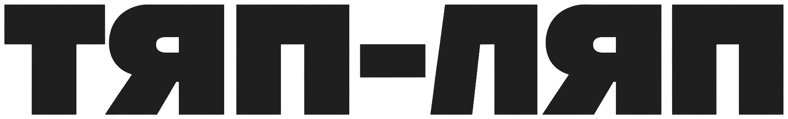

ТЯП-ЛЯП — дизайнерский ремонт
(2026) · Москва и область
Концепт · v2


Ремонт как дизайн-объект. Камень, дерево, кирпич, бетон и правильный свет — без «дорого-богато».
Проект
001 — Кухня в бетоне
Площадь
48 м²
Локация · Год
Москва · 2025

2025
Черновая → под ключ. Открытая планировка, микроцемент, дубовый шпон, скрытый свет. Дизайн показывает фактуру, а не прячет неидеальную стену.
Не «как‑нибудь».
А как надо — без переплат.
«Тяп‑ляп» — это про скорость и честную цену, а не про халтуру. Мы делаем пространство для тех, кто был в Токио и Сеуле, любит уличную моду и вещи со вкусом — и кому надоело стандартное и бежевое.
Сегмент — не эконом, где клеят обои. Это про «хочется круто, но не по цене квартиры». Дизайн важнее идеально ровной стены: красота в материале, свете и пропорции, а не в позолоте. Never Too Small по‑русски: маленький бюджет ≠ скучно.